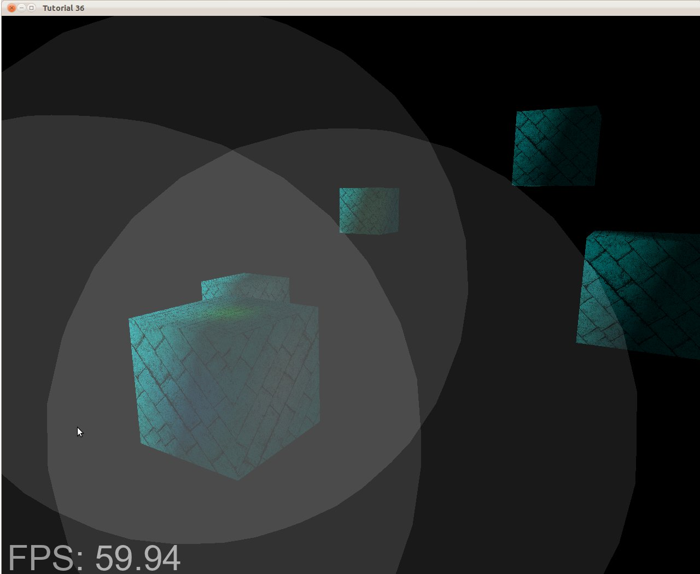

Урок 36 - Deferred Shading - Часть 2
В предыдущем уроке мы рассмотрели основы Deferred Shading и заполнили G-буфер комбинацией результатов работы геометрического прохода. Если вы запустите демо, то увидите как выглядит содержимое G-буфера. Сегодня мы завершим основную реализацию Deferred Shading, а наша сцена будет выглядить также (ну, почти... ), как и при Forward Rendering. К концу урока будет очевидна одна проблема, но мы ее исправим в следующей части.
Теперь, когда G-буфер правильно заполнен, мы хотим использовать его для вычисления света. Выражения для световых эффектов принципиально не изменились. Концепции фонового, рассеянного и ораженного света не изменились, только данные для них теперь хранятся в G-буфере. Для каждого пикселя на экране мы берем сэмпл из различных текстур, а затем происходят привычные вычисления. Вопрос только один: как нам узнать какой пиксель мы обрабатываем? В Forward Rendering это делалось просто - вершинный шейдер предоставлял позицию в пространстве клипа, для этого был автоматический шаг, который переводил в простаранство экрана вершины, а затем растеризатор вызывал фрагментный шейдер для каждого пикселя внутри треугольника. В итоге для этих пикселей вычислялся свет. Но теперь, после того, как завершинлся геометрический этап, мы не хотим снова использовать исходный объект. Это нарушит принцип Deferred Shading.
Вместо этого мы смотрим на объекты с точки зрения источника света. Если у нас есть направленный свет, то все пиксели на экране будут ему подвержены. В таком случае мы можем просто нарисовать прямоугольник во весь экран. Фрагментный шейдер будет вызван для каждого пикселя и добавит привычный эффект. Для точечного света мы можем рендерить грубую модель сферы с центром в источнике света. Размер сферы будет напрямую зависить от силы света. И снова фрагментный шейдер будет вызываться для всех пикселей внутри сферы, и мы будем использовать его для освещения. Это главное правило Deferred Shading - уменьшение колличества пикселей, на которые будет оказан эффект. Вместо того, что бы вычислять эффект небольшого источника света для всех объектов на сцене, мы принимаем его во внимание только в небольшой окрестности. Нам требуется только установить размер сферы так, что бы она содержала всю область, в которой свет действительно присутуствует.
Демо к этому уроку очень не большое - несколько кубиков и 3 источника света. Не большая ирония в том, что колличетсво вершин в сфере больше, чем в остальной сцене. Хотя, вам следует вспомнить, что сцены в современных играх содержат сотни тысяч вершин. В данном случае не страшно добавить несколько дюжин вершин для рендера сфер вокруг каждого источника света. На следующем изображении вы можете увидеть объем света от 3 источников:

Если мы будем запускать фрагментный шейдер только для пикселей внутри серых участков, то мы значительно уменьшим итоговое колличество его вызовов. Для больших сцен с тяжелой глубиной разрыв станет только увеличиваться. Остался только один вопрос: как установить размер сферы?
Он должен быть достаточно большим, что бы свет резко не обрезался, но и не слишком, что бы не вычислять эффект света для пикселей, для которых он слишком мал. Решение очевидно - использовать физику. Мы знаем, что сила света обратно пропорциональна квадрату расстояния. Так как наш фрагментный шейдер умножает цвет света на его интенсивность (обычно от 0.0 и 1.0) и делит на затухание, то нам требуется узнать расстояние, на котором результат деления будет меньше некоторого порога. 8 бит на цвет дают 16,777,216 различных оттенков, это соответсвует стандартной цветовой схеме. Каждый канал дает 256 различных значения, так что давайте установим порог равным 1/256(достаточно близко к 0). Вот так мы находим это расстояние:

Прямиком к коду!
t36_mainapp.cpp
void MainApp::RenderSceneCB()
{
CalcFPS();
m_scale += 0.05f;
m_pGameCamera->OnRender();
DSGeometryPass();
BeginLightPasses(); // !
DSPointLightsPass(); // !
DSDirectionalLightPass(); // !
RenderFPS();
glutSwapBuffers();
}
Давайте рассмотрим изменения кода сверху вниз. Не так много изменилось в главной функции рендера. Мы добавили функцию для подготовки к этапу света (BeginLightPasses()) и разделили проход на 2 функции. Первая для точечного света, а вторая для направленного (прожектор - домашнее задание).
t36_mainapp.cpp
void MainApp::DSGeometryPass()
{
m_DSGeomPassTech.Enable();
m_gbuffer.BindForWriting();
// Only the geometry pass updates the depth buffer
glDepthMask(GL_TRUE); // !
glClear(GL_COLOR_BUFFER_BIT | GL_DEPTH_BUFFER_BIT);
glEnable(GL_DEPTH_TEST); // !
glDisable(GL_BLEND); // !
Pipeline pipeline;
pipeline.SetCamera( m_pGameCamera->GetPos(),
m_pGameCamera->GetTarget(),
m_pGameCamera->GetUp()
);
pipeline.SetPerspectiveProj(m_persProjInfo);
pipeline.Rotate(0.0f, m_scale, 0.0f);
for (uint32_t i = 0; i < std::size(m_boxPositions); ++i) {
pipeline.WorldPos(m_boxPositions[i]);
m_DSGeomPassTech.SetWVP(pipeline.GetWVPTrans());
m_DSGeomPassTech.SetWorldMatrix(pipeline.GetWorldTrans());
m_box.Render();
}
// When we get here the depth buffer is already populated
// and the stencil pass depends on it, but it does not
// write to it.
glDepthMask(GL_FALSE);
glDisable(GL_DEPTH_TEST);
}
Вот 3 главных изменения в геометрическом проходе. Первое - использование функции glDepthMask() для запрета записи в буфер глубины где-либо кроме геометрического прохода. Нам требуется буфер глубины что бы записать в G-буфер ближайшие точки. В проходе света у нас будет только 1 тексель на пиксель экрана, поэтому мы ничего не записываем в буфер глубины. Нет никакого смысла проверять глубину, если нет конкурирующих точек. Важно не забыть очистить буфер глубины перед записью, а glClear() не даст нужного эффекта, если маска глубины установлена в FALSE. Последнее изменение - отключение смешивания. Позднее мы увидим, как проход света использует смешивание для объединения нескольких источников света вместе. В геометрическом проходе это не требуется.
t36_mainapp.cpp
void MainApp::BeginLightPasses()
{
glEnable(GL_BLEND);
glBlendEquation(GL_FUNC_ADD);
glBlendFunc(GL_ONE, GL_ONE);
m_gbuffer.BindForReading();
glClear(GL_COLOR_BUFFER_BIT);
}
Прежде чем мы начнем проход света, вызовем функцию выше, которая обо всем позаботится. Как уже объяснялось, нам требуется смешивание для обоих типов освещения, так как для каждого из них будет свой вызов отрисовки. В forward rendering мы складываем результат всех источников света в FS, но теперь каждый вызов FS имеет дело только с одним типом источника света. Нам требуется сложить свет вместе и смешать результат. Смешивание (Blending) - простая функция, которая принимает источник цвета (вывод из фрагментного шейдера) и получателя (буфер кадра) и производит некоторые вычисления над ним. Смешивание часто используется для создания эффекта прозрачности, поскольку оно способно взять часть цвета из источника и получателя и смешать их вместе. В нашем случае мы устанавливаем смешивание по формуле GL_FUNC_ADD. Это значит, что GPU будет просто добавлять источник в получателя. Так как мы хотим равного сложения, то назначаем смешивание в GL_ONE и для источника, и для получателя. В результате: 1 * src + 1 * dst. Ах да, смешивание нужно предворительно разрешить - glEnable(GL_BLEND).
После того, как мы позаботились о смешивании мы устанавливаем G-буфер на чтение и очищаем буфер цвета. Мы готовы для прохода света.
tutorial36.cpp:206
void MainApp::DSPointLightsPass()
{
m_DSPointLightPassTech.Enable();
m_DSPointLightPassTech.SetEyeWorldPos(m_pGameCamera->GetPos());
Pipeline pipeline;
pipeline.SetCamera(m_pGameCamera->GetPos(),
m_pGameCamera->GetTarget(),
m_pGameCamera->GetUp()
);
pipeline.SetPerspectiveProj(m_persProjInfo);
for (uint32_t i = 0; i < std::size(m_pointLight); i++) {
m_DSPointLightPassTech.SetPointLight(m_pointLight[i]);
pipeline.WorldPos(m_pointLight[i].Position);
const float boundingSphereScale =
CalcPointLightBSphere(m_pointLight[i]);
pipeline.Scale( boundingSphereScale,
boundingSphereScale,
boundingSphereScale
);
m_DSPointLightPassTech.SetWVP(pipeline.GetWVPTrans());
m_bsphere.Render();
}
}
Для точечного света мы просто рендерим сферу для каждого источника. Центр сферы установлен в позиции источника света, а функция CalcPointLightBSphere() вычисляет радиус сферы согласно параметрам источника света.
t36_mainapp.cpp
float MainApp::CalcPointLightBSphere(const PointLight& light)
{
const float maxCh =
fmax(
fmax( light.Color.x,
light.Color.y
),
light.Color.z
);
const float lin =
light.Attenuation.Linear;
const float exp =
light.Attenuation.Exp;
const float intensity =
light.DiffuseIntensity;
const float discriminant =
lin * lin - 4 * exp * (exp - 256 * maxCh * intensity);
return (-lin + sqrtf(discriminant)) / 2 * exp;
// here is an error - right of the division
// must be in brackets, but in this way
// light is cannot be seen
}
Эта функция вычисляет размер сферы для указанного источника света. Это прямая реализация формулы из раздела теории. Мы добавляем 1 так как соответствующая интенсивность как раз на расстоянии в 1 от источника света.
t36_mainapp.cpp
void MainApp::DSDirectionalLightPass()
{
m_DSDirLightPassTech.Enable();
m_DSDirLightPassTech.SetEyeWorldPos(m_pGameCamera->GetPos());
Matrix4f worldViewProjection;
worldViewProjection.InitIdentity();
m_DSDirLightPassTech.SetWVP(worldViewProjection);
m_quad.Render();
}
Обрабатывать направленный свет (мы поддерживаем только один такой источник света) еще проще. Нам нужен один прямоугольник для охвата всех пикселей. Модель прямоугольника идет из (-1,-1) в (1,1), поэтому матрица WVP будет единичной. Тогда вершины останутся в прежнем состоянии и после деления перспективы (perspective divide) и преобразования в пространтсво экрана, он будет иметь координаты из (0,0) в (SCREEN_WIDTH,SCREEN_HEIGHT).
light_pass.vs
#version 330
layout (location = 0) in vec3 Position;
uniform mat4 gWVP;
void main()
{
gl_Position = gWVP * vec4(Position, 1.0);
}
VS элементарный. В случае направленного света матрица WVP - единичная, поэтому его координаты не изменятся. Для точечного света мы получим проекцию сферы на экран. Эти пиксели мы и хотим затемнить.
dir_light_pass.fs
void main()
{
vec2 TexCoord = CalcTexCoord();
vec3 WorldPos = texture(gPositionMap, TexCoord).xyz;
vec3 Color = texture(gColorMap, TexCoord).xyz;
vec3 Normal = texture(gNormalMap, TexCoord).xyz;
Normal = normalize(Normal);
FragColor = vec4(Color, 1.0) * CalcDirectionalLight(WorldPos, Normal);
}
point_light_pass.fs
void main()
{
vec2 TexCoord = CalcTexCoord();
vec3 WorldPos = texture(gPositionMap, TexCoord).xyz;
vec3 Color = texture(gColorMap, TexCoord).xyz;
vec3 Normal = texture(gNormalMap, TexCoord).xyz;
Normal = normalize(Normal);
FragColor =
vec4(Color, 1.0) * CalcPointLight(WorldPos, Normal);
}Это фрагментные шейдеры для направленного и точечного света. В них используется похожая логика. Внутреннии функции для света не изменились. Мы берем сэмпл из G-буфера для получения мировых координат, цвета и нормалей. В предыдущем уроке мы так же отвели место для координат текстуры в G-буфере, но лучше вычислять их на лету для экономии места. Это очень просто и делается в функции ниже.
dir_light_pass.fs
point_light_pass.fs
vec2 CalcTexCoord()
{
return gl_FragCoord.xy / gScreenSize;
}
Нам нужен сэмпл из G-буфера соответсвующий позиции пикселя на экране. GLSL предоставляет встроенную переменную под названием gl_FragCoord, это именно то, что мы и хотели. Это вектор 4D, который содержит координаты текущего пикселя в пространтсве экрана в компонентах XY, глубина пикселя в Z и 1/W - это часть W. Нам требуется предоставить ширину и высоту экрана в FS и разделив позицию на экране на разрешение экрана, мы получим значения между 0 и 1, которые будут координатами текстуры в G-буфере.
bool GBuffer::Init(uint32_t WindowWidth, uint32_t WindowHeight)
{
...
for (uint32_t i = 0 ; i < ARRAY_SIZE_IN_ELEMENTS(m_textures) ; i++) {
...
glTexParameterf(GL_TEXTURE_2D, GL_TEXTURE_MIN_FILTER, GL_NEAREST);
glTexParameterf(GL_TEXTURE_2D, GL_TEXTURE_MAG_FILTER, GL_NEAREST);
...
}
...
}
Нам требуются незначительные изменения в инициализации G-буфера. В предыдущем уроке мы рендерили в него и затем использовали побитовое копирование в стандартный буфер кадра. Т.к. мы хотим использовать его для обычного сэмплинга, а отображение между пикселями экрана и G-буфера 1 к 1, то мы устанавливаем тип фильтрации GL_NEAREST. Это предотвратит не нужную интерполяцию между текселями, что могло создать искажения.
void GBuffer::BindForReading()
{
glBindFramebuffer(GL_DRAW_FRAMEBUFFER, 0);
for (uint32_t i = 0; i < ARRAY_SIZE_IN_ELEMENTS(m_textures); i++) {
glActiveTexture(GL_TEXTURE0 + i);
glBindTexture(GL_TEXTURE_2D, m_textures[GBUFFER_TEXTURE_TYPE_POSITION + i]);
}
}
Так же нам нужно сделать некоторые изменения в том, как мы привязывали G-буфер для чтения перед началом прохода света. Вместо того, что бы привязывать его к GL_READ_FRAMEBUFFER мы отсоединяем его от GL_DRAW_FRAMEBUFFER, привязав вместо него стандартный FB. Наконец, мы привязываем три текстуры в соответствующие текстурные блоки, так что мы можем брать сэмплы из них в FS.
Проблемы, проблемы…
У нас ряд проблем с текущей реализацией Deferred Shading.
- Первая: когда камера в пространстве света, то он исчезает. Причина в том, что мы ренерим только лицевую часть сферы, а внутренняя - вырезана. Если отключить обрезание, то при смешивании свет будет усилен (так как рендерятся обе стороны) вне сферы, а внутри как обычно.
- Вторая: сфера на самом деле не ограничивает свет, и иногда освещаются объекты, которые не должны - из за наложения в пространстве экрна.
Мы решим эти проблемы в следующем уроке.